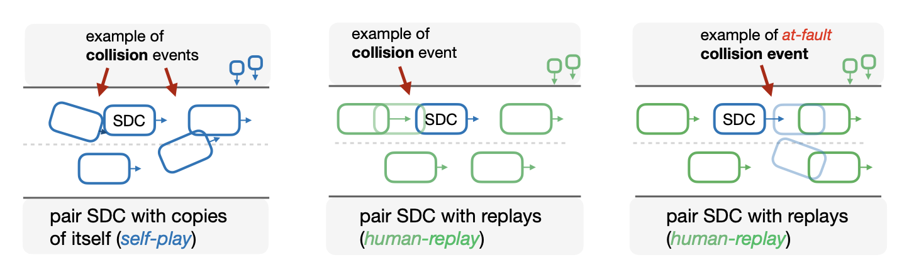

Paired rollout
Negotiating cross traffic
Regularized self-play keeps a more legible path through the interaction, while the unregularized policy presses more directly toward the goal.
Manuscript · 2026
1NYU Tandon School of Engineering · 2NYU Courant · 3Princeton University · 4Centre for Robotics, Mines Paris · 5Valeo
Spiced self-play combines over 60 years of simulated self-play with 30 minutes of human driving data as a behavioral anchor, improving coordination with logged human trajectories without reward engineering or domain randomization.
Abstract
Self-play reinforcement learning can substitute cheap, large-scale simulation for large human driving datasets, but policies trained only through self-play can converge to effective yet incompatible driving conventions. Prior work often addresses this through reward engineering and domain randomization.
We introduce spiced self-play: policies trained with a minimal safe-goal-reaching reward, over 60 years of self-play simulation, and 30 minutes of human driving data as a behavioral anchor. The resulting policies coordinate with logged human trajectories using 2,500× less human data than imitation-learning baselines, and the full pipeline runs in 15 hours on a single consumer-grade GPU.
Rollouts
These videos align paired held-out human-replay scenarios so the regularized policy and unregularized policy can be compared in a shared camera view. In each rollout, the learned ego agent is goal-conditioned: the blue vehicle shows the regularized policy, the yellow vehicle shows the unregularized policy, the green circle marks the goal, and the other light green vehicles replay recorded human trajectories. Both policies use the same minimal reward: +1 when the goal indicator I[goal] is true, and -1 for off-road or collision events.
Paired rollout
Regularized self-play keeps a more legible path through the interaction, while the unregularized policy presses more directly toward the goal.


Paired rollout
The regularized policy stays with the flow of replayed vehicles; the unregularized policy is less patient in the same scene.


Paired rollout
With the human-data anchor, the ego vehicle is more willing to wait instead of exploiting every narrow opening.


Paired rollout
The unregularized rollout can avoid impact while still behaving awkwardly; regularized self-play produces a smoother interaction.


Paired rollout
The regularized policy leaves more time around nearby replayed vehicles, while the unregularized rollout takes a tighter interaction.


Paired rollout
The paired replay shows a more measured regularized trajectory compared with the unregularized policy's more direct progress.


Paired rollout
The paired replay highlights the behavioral difference behind the aggregate social-driving metrics.


Paired rollout
The regularized policy leaves more room around replayed traffic, while the unregularized rollout takes a tighter, more direct line.


Paired rollout
The paired replay shows the regularized agent preserving a more cautious interaction pattern around nearby human-driven vehicles.
Summary
Self-play RL can scale through simulated experience, but policies trained only against themselves may adopt effective driving conventions that do not coordinate with human drivers. Spiced self-play keeps self-play as the main training engine and adds a small behavioral cloning anchor from human driving data.
With 30 minutes of Waymo human driving data and 20B self-play transitions, spiced policies reach 0.994 safe task completion under human replay, outperforming both unregularized self-play and SMART-tiny CLSFT while avoiding reward engineering and domain randomization.
PPO training uses a minimal safe-goal-reaching reward, while the behavioral anchor keeps updates close to conventions observed in a small human dataset.
Held-out scenes replay logged human agents while the learned policy controls the ego vehicle, exposing coordination failures that self-play evaluation can miss.
The experiments vary map diversity and human driving data from minutes to full-dataset references to measure when coordination emerges.
Evaluation

Results


Failure comparison
Both policies fail in replay, but the paired rollout shows regularized agents display more cautious behavior around other agents.


Failure comparison
This pair illustrates a remaining failure mode under human replay, including cases where the controlled vehicle is contacted from behind.
Citation
@misc{cornelisse2026humanlikeautonomy,
title = {Human-like autonomy emerges from self-play and a pinch of human data},
author = {Cornelisse, Daphne and Hunt, Julian and Zhang, Zixu and Doulazmi, Wa{\"e}l and Joseph, Kevin and {Fern{\'a}ndez Fisac}, Jaime and Vinitsky, Eugene},
year = {2026},
eprint = {2606.19370},
archivePrefix = {arXiv},
primaryClass = {cs.LG},
url = {https://arxiv.org/abs/2606.19370}
}